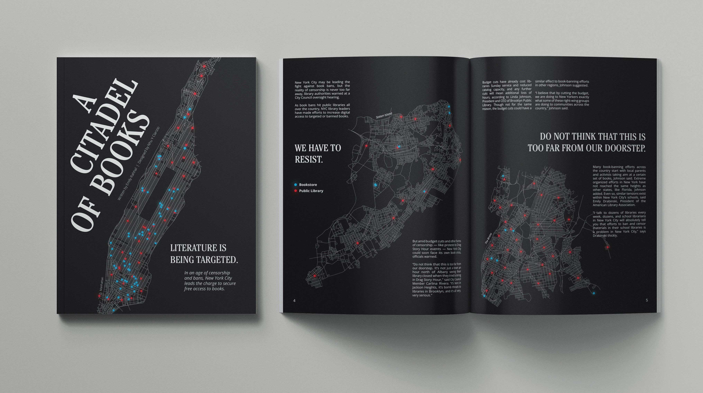
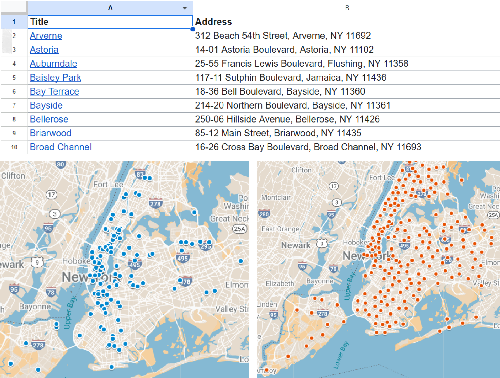
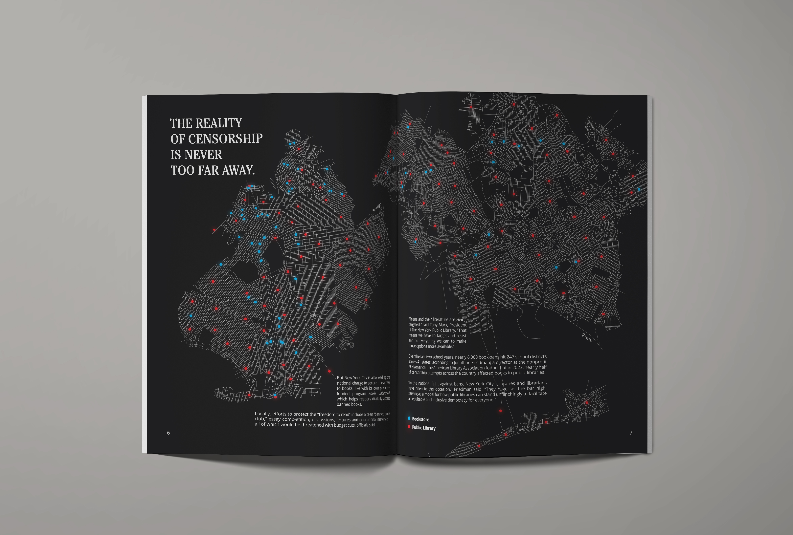
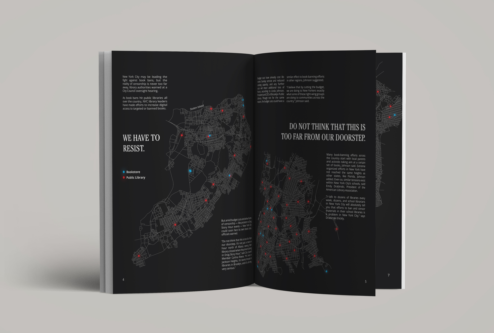
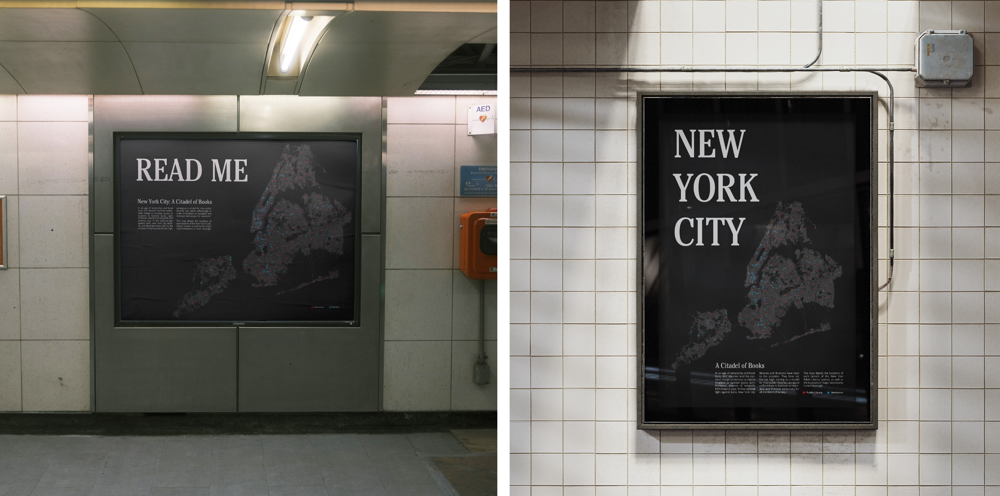

A Citadel of Books is a personal project with a lot of my interests attached. I dream of working in editorial, in New York City, and of making an impact. I found an article by Emily Rahhal, published by PIX11, about how NYC is a haven for those who need access to books in the modern day and age. I knew I wanted to adapt this digital article into an editorial spread as soon as I read it. In the final solution, I connect all of my aforementioned interests together, while also incorporating a certain level of information design and illustration.
I knew from the beginning I wanted to make a map of New York City and pinpoint all the bookstores and libraries in each borough. This was no easy feat; and doing it by going to Google Maps and searching “bookstores in this area” would have been near impossible. Instead, I used websites that had cohesive lists of bookstores in NYC. For the libraries, I went to the Wikipedia page for NYC Public Libraries and got my information there. Then I pasted the information I found into Google Sheets. One column for the title of each place, and one column for the address. By the end, I had some five hundred addresses listed.

After, I went to Google My Maps. This application has a feature that allows the user to upload CSV Files and pinpoint each value on the map in separate layers. I went to my Google Sheets file, exported my information as separate CSV Files, and put them in Google My Maps. I had two layers for each borough; one layer for the public libraries in the area, and one layer for the bookstores in the area. This visualization of data allowed me to work on top - illustrating the borough boundaries and the placing the pinpoints on top. After all this research, actually making the illustrations into an editorial spread was almost easy in comparison.


